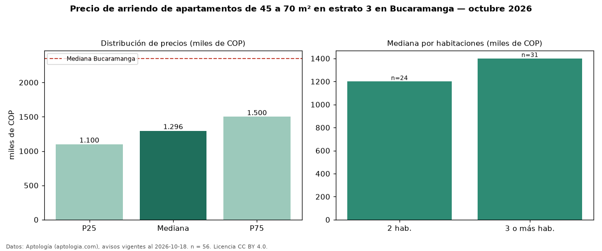

Precio de arriendo de apartamentos de 45 a 70 m² en estrato 3 en Bucaramanga — octubre 2026
COP 1,30 millones al mes es el canon mediano de apartamentos de 45 a 70 m² en estrato 3 en arriendo en Bucaramanga (n = 56 avisos). Frente a la mediana de los apartamentos en estrato 3 en arriendo de Bucaramanga (COP 1,40 millones, n = 90), queda 7 % por debajo; este segmento reúne el 62 % de esos avisos. Por metro cuadrado, la mediana es COP 24.000/m² al mes (n = 55), 0 % por encima de los apartamentos en estrato 3 en arriendo de Bucaramanga (COP 23.905/m²). El área mediana anunciada es 54 m². El segmento con más oferta es el de 3 o más habitaciones (31 avisos, mediana COP 1,40 millones); pasar de 2 habitaciones a 3 o más habitaciones cambia la mediana +17 %. La administración mediana declarada es COP 187.500 al mes (n = 28), aparte del canon. La mediana de todos los apartamentos en arriendo de Bucaramanga es COP 2,35 millones (−45 % de diferencia). 62 % de los avisos con el dato declara parqueadero. Datos: Aptología (aptologia.com), CC BY 4.0 — https://www.aptologia.com/arriendo/bucaramanga. Archivos: PDF, CSV con las cifras y gráfica PNG.

| Avisos únicos | 56 |
|---|---|
| Percentil 25 | COP 1.100.000 |
| Mediana | COP 1.296.500 |
| Percentil 75 | COP 1.500.000 |
| Mediana por m² | COP 24.000 |
Fuente: avisos vigentes de portales inmobiliarios recopilados por Aptología, deduplicados (mínimo 30 avisos únicos por celda). Precios pedidos, no cerrados. Fecha: 2026-10-18.